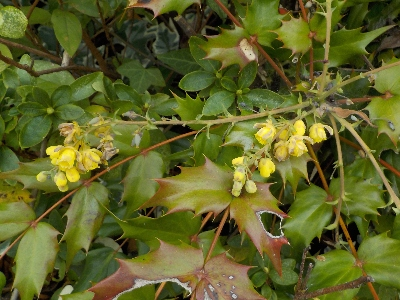
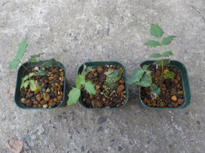
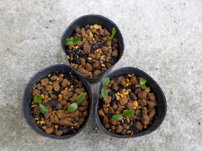
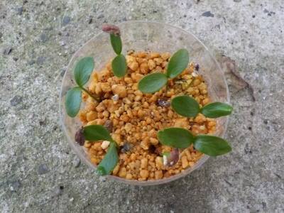
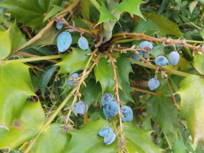

遊びで植物を育てよう
2024/03/31
ヒイラギナンテンが開花中。

あんまり花が付いてないのでちょっと寂しいですね。
この木で出来たタネから育てているものは、今年はまだ花はなさそうです。
【ヒイラギナンテンTOP】
【木TOP】
【園芸TOP】
2022/10/02
ヒイラギナンテンが少しだけ大きくなりました。

去年芽が出たヒイラギナンテンですが、ほとんど成長していませんでした。それでも最近ちょっと大きくなったので植替えしました。
3株大きくなったので3株育てることにしました。
【ヒイラギナンテンTOP】
【木TOP】
【園芸TOP】
2021/07/31
ヒイラギナンテンをポットに植え替えしました。

ヒイラギナンテンの実生は、根っこも芽も硬く植え替えしやすかったです。
小さな木って感じでした。
【ヒイラギナンテンTOP】
【木TOP】
【園芸TOP】
2021/07/18
ヒイラギナンテンが発芽していました。

蒔いてから3週間でこれです。
木の種なので翌年の春に芽が出るんじゃないかと思っていましたが、直ぐに出るんですね。
短期間で発芽するならポットに種を蒔いてもよかったかな。
【ヒイラギナンテンTOP】
【木TOP】
【園芸TOP】
2021/06/27
ヒイラギナンテンの種を採って蒔きました。

ヒイラギナンテンの実が熟れて、ちょっとシワシワになっていました。
たぶん種が出来てます。
10粒採って種蒔きしました。
どれくらいの確率で発芽するでしょうか。
【ヒイラギナンテンTOP】
【木TOP】
【園芸TOP】
360度花が咲いたら見事だろうな。
【おいしいものを食べよう。】【しっかり寝よう。】
【ソロ活をしよう!】【季節感のあることをしよう。】【動画視聴はほどほどに。】【当サイトの全てのコンテンツは無断転載禁止です。】